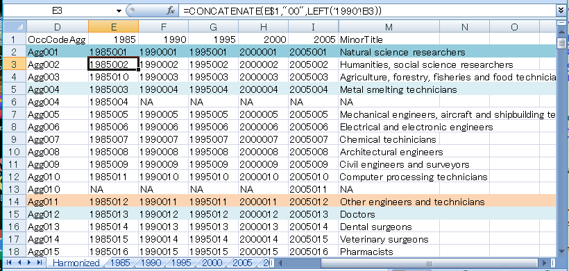
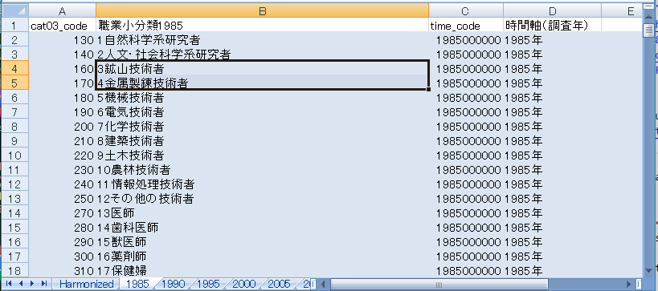
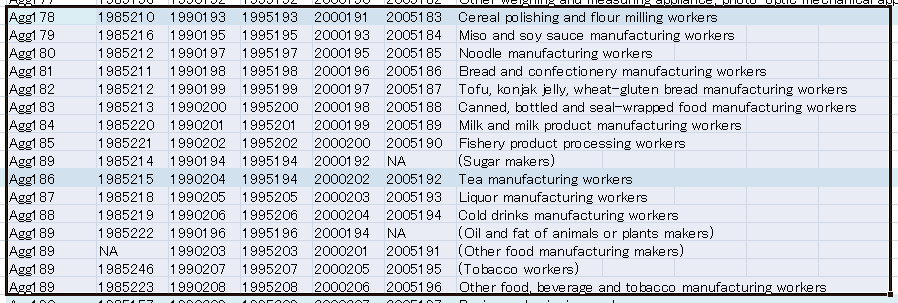

The occupational classifications used in the population censuses carried out between 1985 and 2005
slightly differ. These classifications must be harmonized if we want to follow overall trends during this
period. Uchikoshi and Mugiyama (2020) created such a harmonization to cover censuses carried out between
1980 and 2005. This task creates a similar harmonization covering censuses carried out between 1985 and 2005.
Census information for 1980 is available only in PDF scanned image format and would need to be manually
keyed in, so it is omitted from this task.
Coding for the harmonized occupational classification has the following features:
No leading zeros so that sorting as numbers and sorting as text produce the same results
The harmonized occupation classification and correspondence table can be downloaded from
this project's repository.
The harmonizing task was done in a Microsoft Excel workbook with one worksheet for harmonizing and
one worksheet for each of the census years.

Worksheet for harmonized occupational classifications
In the worksheet, column 'OccCodeAgg' is a temporary coding created for stepping through the set of 5
classifications. The 5 columns to its right contain the 'OccCode' values as described in the
task on preprocessing the data; they will be used to
merge downloaded data into the harmonized classification. The MinorTitle entries are from the
2005 census.

Part of occupation classification for 1985
The harmonization task consists of stepping
down these classifications, rearranging and aggregating as needed. Here are some illustrative
examples:
The first two categories are unchanged across the censuses so two sequential codes, Agg001 and Agg002, are
entered under OccCodeAgg.
The third category is in position 3 for censuses 1990 through 2005, but in position 10 for the 1985
census. This is reflected by entering code '1985010' in position 3 under 1985. Most such rearrangements
are under the same middle category and result in no changes when aggregated at the mid or major levels.
Some rearrangements, however, change minor occupations mid and major classifications. An example is
tobacco workers, who are classified at position 246 under construction workers in the 1985 census,
207 under food and beverage workers in the 1990 and 1995 censuses, and under beverage and tobacco workers
in the 2005 census.
Mining and smelting technicians, the fourth category, were split into two categories in the 1985 census, but
combined for later censuses. Assigning the same OccCodeAgg, 'Agg004', to both rows will allow "group by" aggregation
of 1985 data when it is imported.
Similarly, when a minor occupation is split, such as for computer processing technicians in the 2005 census,
assigning the same OccCodeAgg, in this case 'Agg010,' to both will enable aggregation to the broader definition.
Here, the MinorTitle is taken from the
broader definition used in the older census.
When new occupations appear in later censuses, such as certified social insurance and tax accountants, and
other management specialists in the 2000 and 2005 censuses, OccCodeAgg entries are assigned without provision for
aggregation.
New occupations
Where occupations have been removed from the classification, they are aggregated into the not otherwise
classified (NOC) slot for that mid-level group if one exists. Otherwise it is replaced by NA. Elbers's (2021) segregation
package accomodates omitted occupations.
The mid-level group food, beverage and tobacco workers presents a special case. Tobacco workers
were not in this group in 1985, and was one NOC category for the group. In 1990, tobacco workers were moved into
this group and the group split into a mid-level food workers group and mid-level beverage and tobacco workers group.
Each of the latter groups has an NOC category. For this harmonization, these two mid-level groups were recombined and
the NOC groups coded for aggregation.

Splitting of food, beverages and tobacco mid-level group
Finally, a hierarchical numbering scheme of major, mid and minor occupations is created by deriving
the minor level OccMinor from OccCodeAgg, and adding OccMajor, OccSub and OccMid codes to be compatible with
the occupation levels used for the Population Census of Japan. The added OccSub level reflects the fact
that the population census classifications actually have 4 levels.
The csv file is created by hiding column OccCodeAgg, copying all cells to a new spreadsheet while saving formula as
values, and saving the new spreadsheet in csv format.
Elbers, B. (2021). A Method for Studying Differences in Segregation Across Time and Space.
Sociological Methods & Research. doi:10.18637/jss.v089.i07
Uchikoshi, Fumiya, Ryota Mugiyama. (2020) Trends in Occupational Sex Segregation in Japan:
A Decomposition Analysis of Census Data, 1980-2005.
Japanese Journal of Population Studies. 2020. 56. 9-23
https://doi.org/10.24454/jps.1901001